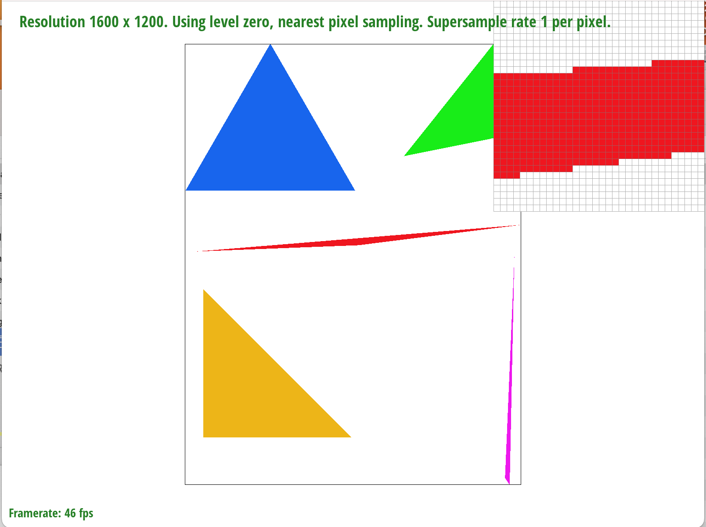

Overview
Give a high-level overview of what you implemented in this homework Think about what you've built as a whole. Share your thoughts on what interesting things you've learned from completing the homework.
Section I: Rasterization
Part 1: Rasterizing single-color triangles
I rasterized triangles by first finding the bound box of the triangle through finding the minimum and maximum of the x and y coordinate. I made sure to use floor ceil functions to cover every single pixel. Then I followed the lecture slide and calculated dXi = Xi+1 – Xi and dYi = Yi+1 – Yi. This allowed me to compute Li(x,y) which could be used to determine whether a point is in the edge, on the edge, or outside the edge. If the point is on the edge or in the edge, I would call fill_pixel to fill in the pixel. Then when I was testing my code, I found out that my test6 was wrong. Through ED, I realized that I wasn’t checking the triangle’s winding. I added a test of cross product to determine whether I need to change the order of the points of the triangle.
My algorithm is no worse than the one that check each sample within the bounding box since I am checking each point within the bound box exactly once through my for-loop. My outer for-loop run from x_min to x_max and my inner for-loop run from y_min to y_max.
Below are images of my test4

|

|
The second image shows aliasing in action.
Part 2: Antialiasing triangles
I started by looking at the function set_sample_rate and set_framebuffer_target, I saw that the resize of width * height is not enough and multiplied rate to it sample rate. Then I started to modify the rasterize_triangle function. To perform super sampling, I added two more for-loops to color each of the smaller pixel center for the large “divided pixel”. I also modified the fill_pixel function to fix point and lines like what I did inside the rasterize_triangle function. For the last step of the rasterization pipeline, I updated the resolve_to_framebuffer function so that it added all colored smaller squared and divided by the total number to get the average. During the process, I learned color can’t be manipulated using “\” but “*” does work.
Super sampling is helpful because it can capture more detail and produce images with smoother edge.
By using super sampling, we divided each pixel into smaller chunks and compared them with the triangle’s edge. Then the colors of the samples within each pixel are averaged, resulting in smoother edges and reduced aliasing.
|
|
|
|
|
From the edge of the triangle, we can see the effect of super sampling clearly. This is because pixels at the edge of the triangle would see partial coverage, where part of the pixel falls into the triangle part does not, resulting in faded color.
Part 3: Transforms
Below is an image I created showing the cubeman dancing as he swings his arms

|
Section II: Sampling
Part 4: Barycentric coordinates
barycentric coordinates is a method that expresses point in a triangle using is relevant position regarding the vertices of the triangle. The weighted combination of vertices in point in the image shown below produced colors by interpolating the vertex attributes based on these coordinates. Each vertex is assigned a color, and the color of any point within the triangle is determined by blending these colors according to the point's barycentric coordinates.
|
|
Part 5: "Pixel sampling" for texture mapping
Pixel sampling is the way to determine color values from a texture mapping of a 3d object. In nearest sampling, we scale our coordinate u,v to a texture coordinate and select the closest texture element to that scaled coordinate. In bilinear sampling, we again we scale our coordinate u,v to a texture coordinate but we calculate the texture element by blending the nearest four element using linear interpolation.
|
|
|
|
|
|
From the images above, by comparing the nearest and the bilinear at super sampling at 1 pixel, we can see that bilinear produced an image that is a lot smoother. In fact, it bilinear at super sampling of 1 pixel performed at a relative level of nearest at super sampling of 16 pixel.
Large difference between nearest sampling and bilinear sampling would occur when texture must be magnified. This means that each texture element is much smaller than 1 pixel. So nearest sampling would produce an image that look blocky, whereas bilinear is much smoother.
Part 6: "Level sampling" with mipmaps for texture mapping
Level sampling involves find the level by calculating logs of norm as mentioned in lecture. For lsm == L_linear I performed linear interpolation by using the floor(get_level()), ceil(get_level()), and diff = get_level() - floor(get_level()). I also found (du/dx, dv/dx) and (du/dy, dv/dy) as mentioned in the spec.
Out of all three-sampling method, super sampling has the most memory usage and takes the most computational power. Super sampling has similar effects as pixel sampling, both of which helps to create smoother edges in high contrast areas. One advantage of pixel sampling is that it often doesn’t require a lot of memory. Level sampling focus on improving the textures quality and makes the images looks blended.
|
|
|
|
|
|
Section III: Art Competition
If you are not participating in the optional art competition, don't worry about this section!